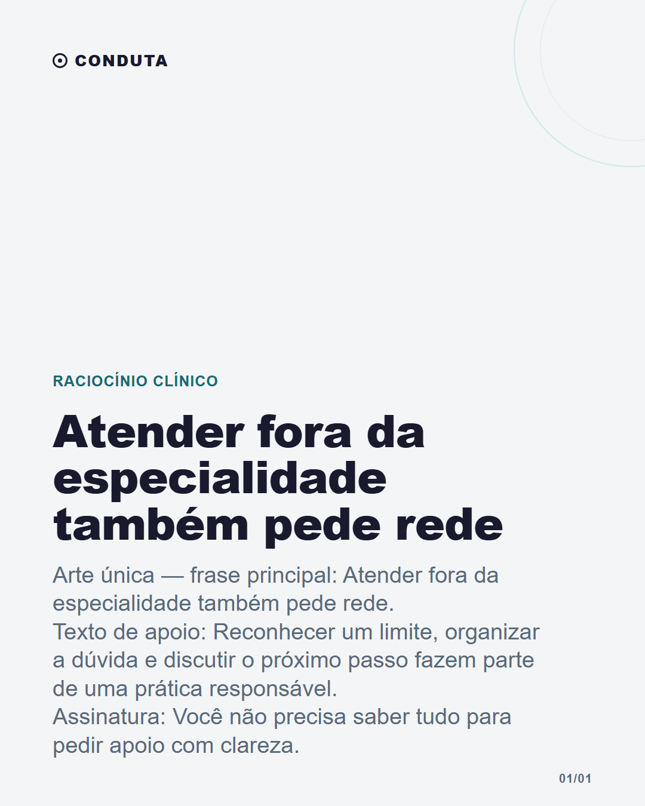

Atender fora da especialidade também pede rede

Legenda
Nem todo atendimento acontece dentro da área em que você se sente mais familiarizado. Às vezes o trabalho é reconhecer o que você consegue organizar naquele momento, identificar o que precisa ser conferido e acionar a rede certa. Isso não diminui a autonomia profissional. Ajuda a proteger o cuidado de decisões apressadas. Tecnologia pode participar desse processo como apoio. Não substitui colega, especialista, protocolo local, exame ou julgamento clínico.
CTA: Com quem você costuma discutir os casos que fogem da sua rotina?
#rotinamedica #medicinageral #educacaomedica #trabalhomedico #medicosbrasileiros
Validação
Nenhum erro impeditivo.
Nenhum alerta.